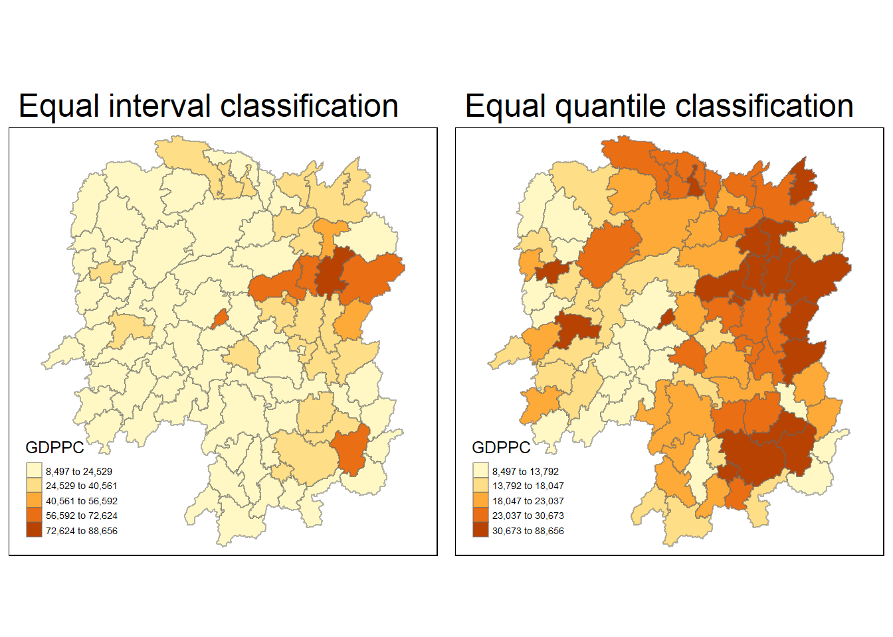

Hands-on Exercise 2.3:Local Measures of Spatial Autocorrelation
10.1 Overview
In this hands-on exercise, wewill learn how to compute Global and Local Measure of Spatial Autocorrelation (GLSA) by using spdep package. By the end to this hands-on exercise, we will be able to:
compute Global Spatial Autocorrelation (GSA) statistics by using appropriate functions of spdep package,
plot Moran scatterplot,
compute and plot spatial correlogram using appropriate function of spdep package.
compute Local Indicator of Spatial Association (LISA) statistics for detecting clusters and outliers by using appropriate functions spdep package;
compute Getis-Ord's Gi-statistics for detecting hot spot or/and cold spot area by using appropriate functions of spdep package; and
to visualise the analysis output by using tmap package.
10.2 Getting Started
10.2.1 The analytical question
In spatial policy, local government/planners aims to ensure equal distribution of development in the province.
we should apply appropriate spatial statistical methods to discover if development are even distributed geographically in the province
if answer is NO, we ask "is there sign of clustering?" (GLOBAL spatial autocorrelation)
if YES, "Where are the clusters" (LOCAL spatial autocorrelation)
In this case study, we are interested to examine the spatial pattern of a selected development indicator (i.e. GDP per capita) of Hunan Provice, People Republic of China. (https://en.wikipedia.org/wiki/Hunan)
10.2.2 The Study Area and Data
Two data sets will be used in this hands-on exercise, they are:
Geospatial data: Hunan province administrative boundary layer at county level. This is a geospatial data set in ESRI shapefile format.
Aspatial data: Hunan_2012.csv: This csv file contains selected Hunan's local development indicators in 2012.
10.2.3 Setting the Analytical Toolls
Packages that we will be using are:
sf is use for importing and handling geospatial data in R,
tidyverse is mainly use for wrangling attribute data in R,
spdep will be used to compute spatial weights, global and local spatial autocorrelation statistics, and
tmap will be used to prepare cartographic quality chropleth map.
10.3 Getting the Data Into R Environment
The geospatial data is in ESRI shapefile format and the attribute table is in csv fomat.
10.3.1 Import shapefile into r environment
The code chunk below uses st_read() of sf package to import Hunan shapefile into R. The imported shapefile will be simple features Object of sf.
hunan is in WSG84 geographical system.
Reading layer `Hunan' from data source
`C:\yixin-neo\ISSS624_AGA\Hands-on_Ex2\data\geospatial' using driver `ESRI Shapefile'
Simple feature collection with 88 features and 7 fields
Geometry type: POLYGON
Dimension: XY
Bounding box: xmin: 108.7831 ymin: 24.6342 xmax: 114.2544 ymax: 30.12812
Geodetic CRS: WGS 8410.3.2 Import csv file into r environment
Next, we will import Hunan_2012.csv into R by using read_csv() of readr package. The output is R data frame class.
# A tibble: 3 × 29
County City avg_wage deposite FAI Gov_Rev Gov_Exp GDP GDPPC GIO Loan
<chr> <chr> <dbl> <dbl> <dbl> <dbl> <dbl> <dbl> <dbl> <dbl> <dbl>
1 Anhua Yiya… 30544 10967 6832. 457. 2703 13225 14567 9277. 3955.
2 Anren Chen… 28058 4599. 6386. 221. 1455. 4941. 12761 4189. 2555.
3 Anxiang Chan… 31935 5517. 3541 244. 1780. 12482 23667 5109. 2807.
# ℹ 18 more variables: NIPCR <dbl>, Bed <dbl>, Emp <dbl>, EmpR <dbl>,
# EmpRT <dbl>, Pri_Stu <dbl>, Sec_Stu <dbl>, Household <dbl>,
# Household_R <dbl>, NOIP <dbl>, Pop_R <dbl>, RSCG <dbl>, Pop_T <dbl>,
# Agri <dbl>, Service <dbl>, Disp_Inc <dbl>, RORP <dbl>, ROREmp <dbl>10.3.3 Performing relational join
The code chunk below will be used to update the attribute table of hunan's SpatialPolygonsDataFrame (geospatial) with the attribute fields of hunan2012 dataframe (aspatial) . This is performed by using left_join() of dplyr package. Since the join columns are not specified, identical columns names ('County') form both dataset will be used for the join.
Column 7 and 15 are the 'County' and 'GDPPC' columns respectively.
10.3.4 Visualising Regional Development Indicator
Now, we are going to prepare a basemap and a choropleth map showing the distribution of GDPPC 2012 by using qtm() of tmap package.
- tm_fill() 's n refer to the number of equal intervals
equal <- tm_shape(hunan)+
tm_fill('GDPPC',
n=5,
style='equal') +
tm_borders(alpha=0.5) +
tm_layout(main.title = 'Equal interval classification',
main.title.size=1.5,
legend.height = 0.25,
legend.width = 0.25)
quantile <- tm_shape(hunan)+
tm_fill('GDPPC',
n=5,
style='quantile') +
tm_borders(alpha=0.5) +
tm_layout(main.title = 'Equal quantile classification',
main.title.size=1.5,
legend.height = 0.25,
legend.width = 0.25)
tmap_arrange(equal, quantile, asp =1, ncol=2)